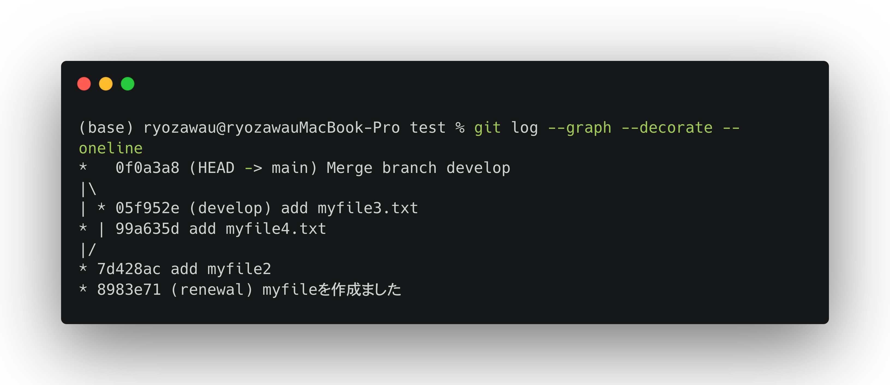

Git
Contents
Git#
紹介#
Gitは「パージョン管理システム(Version Control System)」と呼ばれるものの一つです。
パージョン管理システム(（Version Control System)とは、プログラムやドキュメントなどのファイルに対して、時間とともに加えられた変更を記録するシステムです。
具体的に言えば、ファイルの「パージョン(変更履歴)」を記録して、いつでも過去の状況に戻したり、過去の変更履歴を比較したり、またはどのタイミングで問題が起こっていたかを確認したり、様々なことができるプログラム開発やファイル管理を補助するシステムです。
パージョン管理システムはたくさんの種類がありますが、現在最も利用されているのはGitです。さらに、GitHubなどのリモートリポジトリと組み合わせることで、クラウドでデータと進捗を管理したり、他のメンバーとコードと情報を共有したり、個人のプロジェクトだけでなく、共同開発するときも強力なツールとなります。
インストール#
Gitインストール#
公式サイトからGitをインストールする。
VSCodeのインストール#
公式サイトからVSCodeをインストールする。
必要な拡張機能をインストールします。左側のサイドバーで「拡張機能」をクリックして、検索欄で以下の拡張機能を検索し、インストールしてください。
Git History
Git Graph
GitLens
GitHub Pull Requests and Issues
Python
Jupyter
Note
VSCodeは強力なコードエディターであり、様々なプログラミング言語に機能を提供する幅広い拡張機能を備えた軽量の汎用統合開発環境 (IDE) です。VSCodeでより簡単的に・効率的にGitを操作できます。また、VSCodeでは便利な機能が豊富に搭載されているPython拡張機能もたくさんあります。
Gitの基本操作#
Git プロジェクトを取得するには、大きく二通りの方法があります。
既存のプロジェクトやディレクトリを Git にインポートする方法。
既存の Git リポジトリを別のサーバーからクローンする方法です。
まず、既存のプロジェクトやディレクトリを Git にインポートし、ファイルをコミットと履歴の管理を説明します。
既存のディレクトリでのリポジトリの初期化#
ディレクトリを作ろう
mkdir test cd test
リポジトリの初期化
git init
「ファイル」→「フォルダーを開く』→ ディレクトリを選択。VSCode左側の『エクスプローラー』に、開いたフォルダ名が表示されます。
サイドバーの「ソース管理」(Source Control)を表示して，「リポジトリの初期化」(Initialize Rspository)をクリックします。

コミット(commit)#
リポジトリを作成すると、そこに対するファイルの変更履歴を登録することができます。その操作をコミット(commit)といいます。
コミットを実行すると、リポジトリの内では、前回コミットした時の状態から現在の状態までの差分を記録したリビジョン(Revision)と呼ばれるものが作成されます。
コミットによって、ディレクトリ中の全てのファイルのスナップショットを記録します。

Gitの管理下に置かれた、みなさんが実際に作業をしているディレクトリのことをワークツリーと呼びます。
Gitでは、コミットを実行した時にワークツリーから直接リポジトリ内に状態を記録するのでなく、その間に設けられているインデックスの設定された状態を記録するようになっています。
インデックスとは、リポジトリにコミットする準備をするための場所のことです。
コミットでファイルの状態を記録するためには、まずインデックスにファイルを登録する必要があります。
このようにインデックスを間に挟むことで、ワークツリー内の必要ないファイルを含めずにコミットを行ったり、ファイルの一部の変更だけをインデックスに登録してコミットすることができます。
まとめると、コミットのプロセスは以下になります:
ワークツリー（作業している場所）で編集、変更を行います
インデックス（一時登録場所）へ編集・変更内容を登録
リポジトリへ変更内容を登録（コミット）
ディレクトリで任意のファイルを作る。例えば、
echo This is some text > myfile.txt
git statusというコマンドでステータスを確認すると、myfile.txtはUntracked fileであり、つまり、また追跡対象になっていないです。
git status

git add myfile.txtでmyfile.txtを追跡対象に追加し、再びgit statusでステータスを確認すると、Changes to be committed、すなわち、コミット待ちと表示されています。
git add myfile.txt git status

コミットをするには
git commitというコマンドを使います。コミットをする際、コミットの内容を説明するメッセージを記入する必要があります。-mというオプションを付加して、その後メッセージを入れましょう。例えば、
git commit -m "myfileを作成ました"

ファイルを作成すると、VSCodeが自動的に変更を検出し、ソース管理サイドバーで数字が表示されます。

ソース管理に更新ファイルの一覧が表示されます。
+アイコンでステージング操作を行います(git addと相当する)。ステージングした状態からコミットメッセージを入力して、
コミット(Commit)アイコンでコミットが完了します。

コミットリセット(reset)#
どんな作業であっても、何かをやり直したくなることはあります。 ここでは、行った変更を取り消すための基本的なツールについて説明します。
仮に、myfile.txtを削除し、コミットした操作を行いましたが、実はこのファイルは捨ててはいけないファイルだったと気ついたとします。
Gitで間違えた変更を元に戻していきましょう。
myfile.txtを削除し、delete myfileというコメントでコミットします。
git logでコミットの情報を確認します。コミットを特定するためには、5d5277156bfef81535e8938f4e9f71b1db2eacf8のような形のハッシュを使います。
git log

特定のコミットまで戻す場合、以下のコマンドのような形でコミットIDを指定できます。
git reset 8983e71d981c204a92d417c0301b8e9c5f99b7f9
-「特定のコミットまで戻す」とは、コミットにおけるワークツーリ、インデックス、リポジトリのどちらに戻すでも可能です。コマンドにオプションを付加することでresetの方法を指定できます。デフォルトの場合は、コミットとステージングが元の状態に戻ります。
Git Graphという拡張機能をインストールします。
サイドバーの「Source Control」→「View Commit Graph」をクリックすると、ログを確認できます。
戻すそうのコミットを見つけて、マウスの右クリックし、表示されるメニュで「
Reset Current Branch to Commit」→ 「Reset」を選ぶと、指定したコミットに戻ります。
Note
リセットはオプションを指定できます。
--soft「ワークツーリでの変更」→「ステージング」→「リポジトリへコミット」の作業のうち、最後の「コミット」だけをリセットする方法です。ファイルがステージングされた状態まで戻されます。--mixed「ワークツーリでの変更」→「ステージング」→「リポジトリへコミット」の作業のうち、「ステージング」までをリセットする方法です(default オプション)。インデックスが空の状態に戻すので、ここでステージングをやり直してコミットできます。--hard「ワークツーリでの変更」→「ステージング」→「リポジトリへコミット」の作業のうち、「ワークツーリでの変更」までをリセットする方法です。この方法の場合、ファイルの変更などを含めて破棄されます。つまり、指定したミットまでまるごと消す操作になります。
git resetで一つ前のコミットに戻す、git statusでコミット状態を確認してください。ファイルの変更状態を確認できましtら、「ステージング」→「リポジトリへコミット」の操作でワークツーリにおけるファイルの変更を行います。
Advanced
git checkoutでも元の状態に戻すことができます。ただ、この操作はワークツリーまで変更するので、場合によるcheckoutは作業ディレクトリを破壊する(上書きなど)可能性もありますので、十分に注意してください。一方、git resetは--hardオプションではないなら、作業ディレクトリにファイルに直接に変更は加えられていません。
ブランチ(branch)#
ブランチとは、開発の本流から分岐し、それぞれ状態ごとに作業を進める機能のことです。
ブランチ機能を使うことで、複数の状態を同時に保つことができます。個人作業での試行錯誤もグールプの共同作業も非常に役を立っています。

myfile2.txtという新しいファイルを作成し、add myfile2というコメントでコミットします。コミットの履歴を確認します。
新しいブランチを作ってみましょう。例えば、以下のコマンドで
developという名前のブランチを作成します。
git branch develop
特定のコミットからブランチを作る際、
git checkoutコマンドを使います。例えば、コミットID3be9fa7からrenewalという名前のブランチを作るなら、以下のコマンドを実行します。
git checkout 8983e71 -b renewal
git branchで現在作られるブランチの一覧を確認できます。git checkoutで切り替えます。例えば、以下のコマンドでdevelopに切り替えます。
git checkout develop
画面の左下のブランチ名（main/master）が表示されている個所をクリックし、新しいブランチを作成を実行します。手順で作成するブランチ名を入力してブランチを作成します。
Git Graphを開けて、分岐を作成したいコミットで右クリックし、表示される表示されるメニュで
Create Branchを選ぶ、手順で作成するブランチ名を入力してブランチを作成します。
マージ(merge)#
ブランチを分けて作業を進めると、各ブランチでの内容がバラバラになります。そんな時に、各ブランチでの変更をまとめる機能は「マージ」です。
仮に、develop branchでmyfile3.txtを追加する作業を行います。
git checkout develop
echo some text >> myfile3.txt
git add myfile3.txt
git commit -a -m "add myfile3.txt"
main/masterブランチに切り替えます。main/masterブランチでmyfile4.txtを作成し、 “add myfile4.txt” というメッセージでコミットします。
developブランチとmain/masterブランチの間に差分を確認できます。
ここで、developブランチを```main/master``ブランチにマージします。
git branchで現在main/masterブランチにいることを確認します。マージを実行します。
git merge develop -m "merge develop branch"
ステータスバーの左下端に表示されているブランチが「
main/master」になっていることを確認します。Ctrl+Shift+P（Command+Shift+P）でコマンドパレットを開く、入力欄にGit:mergeと入力するとマージの項目が表示されます。マージしたいブランチを選択します。これで、現在のブランチに選択したブランチがマージされます。
再びdevelopブランチとmain/masterブランチの間に差分を確認すると、developでの変更はmain/masterブランチに反映できたことがわかりました。
ブランチの履歴も確認できます。
git log --graph --decorate --oneline

以下の指示に従って操作を行ってくだい。
chss2023_practicesという名前のフォルダを作成し、その中でGitを初期化します。README.mdというファイルを作成し、“README.mdを作成しました” というメッセージでコミットしてください。“README.mdを作成しました” のコミットに基づく、
developというブランチを作成してくだい。master/mainブランチでpractice1.txtというファイルを作成し、“practice1.txtを作成しました” というメッセージでコミットしてください。developブランチでpractice2.txtというファイルを作成し、“practice2.txtを作成しました” というメッセージでコミットしてください。master/mainブランチにdevelopブランチをマージします。メッセージは”merge develop branch” で入力してください。「ソース管理」→「Show Commit Graph」でコミット履歴を確認してくだい。表示されるCommit Graphをスクリーンショットして、課題として提出してください。